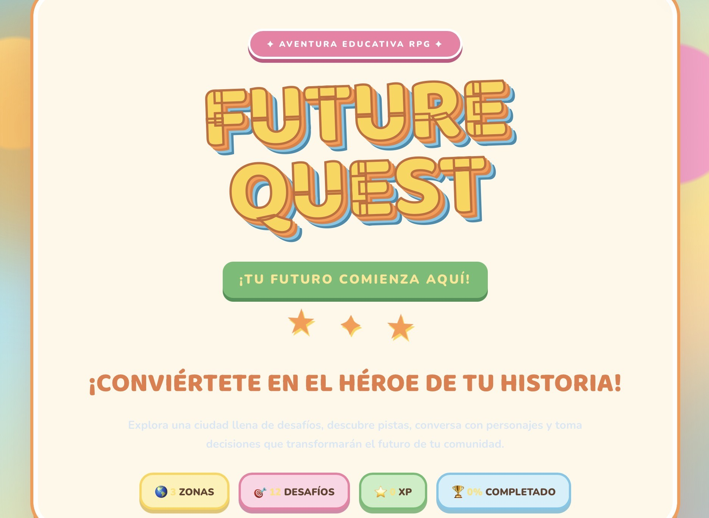
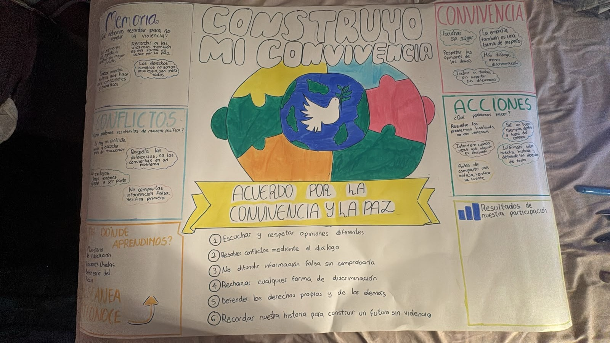

Discriminación
Tratar de forma injusta a alguien por su origen, apariencia, idioma, género, discapacidad u otras características limita sus oportunidades y vulnera su dignidad.
La igualdad se practica cada día ↗ARQUITECTOS DEL FUTURO · INICIATIVA CIUDADANA
El futuro no se construye solo. Se transforma con cada decisión, cada conversación y cada acción que elegimos hacer diferente.
01 / COMPRENDER
La convivencia se debilita cuando normalizamos la exclusión, la agresión o la indiferencia. Reconocer estos problemas es el primer paso para transformarlos.
Tratar de forma injusta a alguien por su origen, apariencia, idioma, género, discapacidad u otras características limita sus oportunidades y vulnera su dignidad.
La igualdad se practica cada día ↗Las agresiones físicas, verbales, psicológicas o digitales generan miedo, dañan la confianza y dificultan que las personas participen libremente.
La seguridad es un derecho ↗Los rumores y contenidos falsos pueden alimentar prejuicios, polarización y decisiones injustas. Contrastar fuentes protege el diálogo público.
Verificar antes de compartir ↗Cuando dejamos de escuchar, los desacuerdos se convierten con mayor facilidad en enfrentamientos. Dialogar no exige pensar igual, sino respetarnos.
Escuchar también es actuar ↗Una sociedad democrática no necesita que todos pensemos igual. Necesita que aprendamos a convivir con nuestras diferencias.
02 / RECORDAR PARA NO REPETIR
Entre 1980 y 2000, el Perú vivió un periodo de violencia marcado por acciones terroristas y graves violaciones de derechos humanos. Conocer esta historia es indispensable para defender la democracia.
Consultar el Informe Final de la CVR ↗Comienza el conflicto armado interno, con el inicio de las acciones violentas de Sendero Luminoso.
La población civil sufrió atentados, desplazamientos, desapariciones y graves vulneraciones de derechos. También hubo crímenes cometidos por agentes del Estado.
La Comisión de la Verdad y Reconciliación presenta su Informe Final, documentando los hechos y el impacto humano del periodo.
Recordar a las víctimas, buscar la verdad y exigir justicia nos ayuda a evitar que la violencia vuelva a normalizarse.
MEMORIA · DERECHOS HUMANOS · DEMOCRACIA03 / DEL PENSAMIENTO A LA ACCIÓN
La Cultura de Paz se construye con hábitos cotidianos. Descubre cinco maneras de llevarla a tu comunidad.
Evita burlas y estereotipos; reconoce la dignidad de cada persona.
↗Escucha otras experiencias antes de juzgar o responder.
↗Expresa desacuerdos con argumentos, calma y respeto.
↗Propón soluciones y escucha las voces que suelen quedar fuera.
↗Busca acuerdos, pide apoyo cuando sea necesario y rechaza la violencia.
↗04 / IDEAS QUE SE CONVIERTEN EN ACCIÓN
Dos experiencias diferentes, una misma intención: aprender, reflexionar y participar en la construcción de una convivencia más justa.

Conviértete en protagonista de una aventura interactiva. Explora escenarios, conversa con personajes, supera desafíos y toma decisiones que pueden transformar el futuro de tu comunidad.
Enlace del videojuego pendiente de publicación.
Un espacio colectivo para expresar ideas y compromisos sobre el respeto, la memoria, la convivencia y la Cultura de Paz. Cada reflexión invita a transformar los valores en acciones.

⤢ AMPLIAR FOTOGRAFÍA05 / TU VOZ IMPORTA
Elige un compromiso para practicar esta semana. No necesitas hacer algo enorme para empezar.